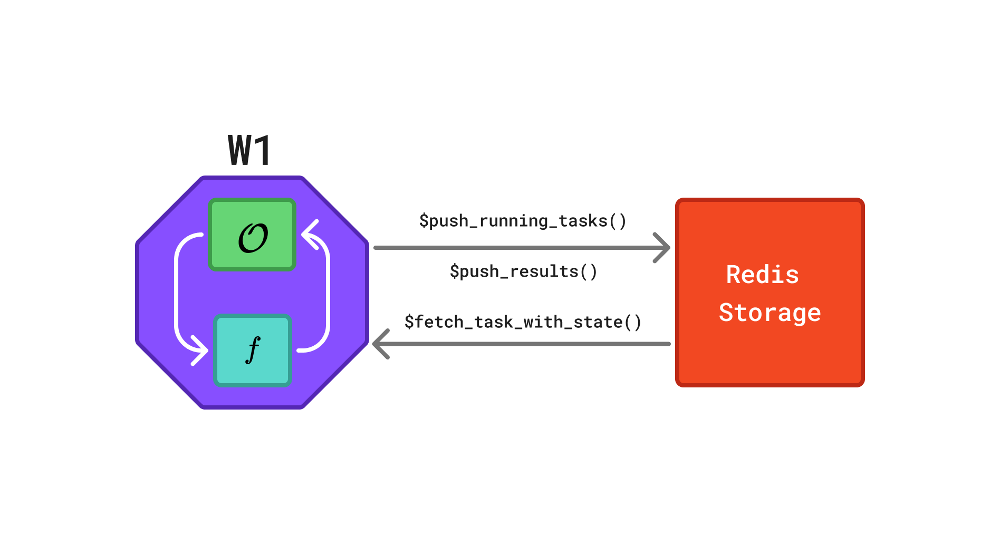
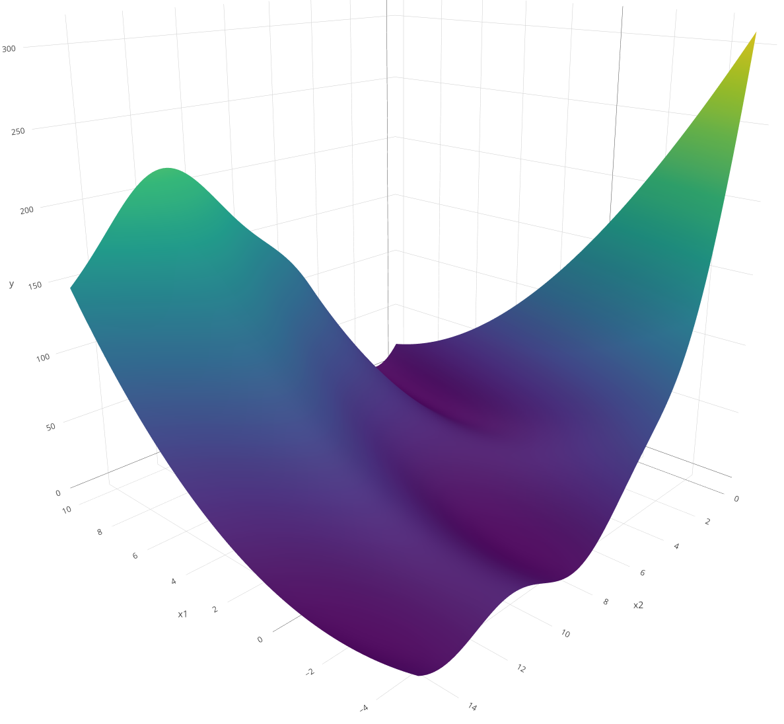

branin = function(x1, x2) {
(x2 - 5.1 / (4 * pi^2) * x1^2 + 5 / pi * x1 - 6)^2 +
10 * (1 - 1 / (8 * pi)) * cos(x1) +
10
}rush is a package for asynchronous and decentralized optimization in R. It uses a database-centric architecture in which workers communicate through a shared Redis database, each independently executing its own optimization loop. This vignette demonstrates the basic functionality of rush through three examples of increasing complexity.
General Structure
A rush network consists of multiple workers that communicate via a shared Redis database. Each worker evaluates tasks and pushes the corresponding results back to the database, as illustrated in Figure 1.

Redis database in a rush network. The octagon represents a worker and the rectangle represents the Redis database. Each worker W runs its own instance of the optimizer \(\mathcal{O}\), evaluates the objective function \(f\), and exchanges task information via a shared Redis database. Arrows indicate the flow of information: workers retrieve completed tasks via $fetch_finished_tasks(), propose and store new tasks via $push_running_tasks(), and report results via $finish_tasks().
Random Search
We begin with a simple random search to illustrate the core concepts of rush. Although random search does not require communication between workers, it introduces the worker loop, tasks, and the manager.
We use the Branin function \(f\) as the optimization target:
\[f(x_1,x_2)=\left(x_2-\frac{5.1}{4\pi^2}x_1^2+\frac{5}{\pi}x_1-6\right)^2 +10\left(1-\frac{1}{8\pi}\right)\cos(x_1)+10\]
The function is optimized over the domain \(x_1 \in [-5, 10]\) and \(x_2 \in [0, 15]\). It is a commonly used benchmark function that is fast to evaluate yet sufficiently nontrivial.

Worker Loop
We define the worker_loop function, which is executed by each worker. The function repeatedly samples a random point, evaluates it using the Branin function, and writes the result to the Redis database. It takes a RushWorker object (rush) and the objective function branin as arguments. The loop terminates after 100 tasks have been evaluated.
The worker loop relies on two principal methods. The $push_running_tasks() method creates a new task in the database, marks it as "running", and returns a unique key identifying it. The $finish_tasks() method takes this key along with the result and writes it to the database, marking the task as "finished". The $n_finished_tasks field tracks the number of completed tasks and serves as the termination criterion. Marking the task as "running" before evaluation is not essential for random search, but is important for algorithms that use the states of other workers’ tasks to inform the next proposal.
Tasks
Tasks are the basic units through which workers exchange information. Each task consists of four components: a unique key, a computational state, an input (xs), and an output (ys). The input and output are lists that may contain arbitrary data. Tasks pass through one of four computational states: "running", "finished", "failed", and "queued". The $push_running_tasks() method creates tasks marked as "running" and returns their keys. Upon completion, $finish_tasks() marks tasks as "finished" and stores the associated results. Tasks that encounter errors can be marked as "failed" using the $fail_tasks() method. The fourth state, "queued", supports a queue mechanism described in Section 4.1.
Manager
The Rush manager class is responsible for starting, monitoring, and stopping workers within the network. It is initialized using the rsh() function, which requires a network identifier and a config argument. The config argument specifies a configuration file used to connect to the Redis database via the redux package.
config = redux::redis_config()
rush = rsh(
network = "example-random-search",
config = config)Workers are started using the $start_workers() method which accepts the worker loop and the number of workers as arguments. Any additional named arguments are forwarded to the worker loop function. The workers run on mirai daemons which are started with the mirai::daemons() function.
mirai::daemons(4)
rush$start_workers(
worker_loop = wl_random_search,
n_workers = 4,
branin = branin)
rush
── <Rush> ──────────────────────────────────────────────────────────────────────
• Running Workers: 0
• Queued Tasks: 0
• Running Tasks: 0
• Finished Tasks: 0
• Failed Tasks: 0Once the optimization completes, the results can be retrieved from the database. The $fetch_finished_tasks() method returns a data.table containing the task key, input, and result. The worker_id column identifies the worker that evaluated the task. Further auxiliary information can be passed to $push_running_tasks() and $finish_tasks() via the extra argument.
rush$fetch_finished_tasks()[order(y)] worker_id x1 x2 y keys
<char> <num> <num> <num> <char>
1: overconsta... 9.537917 3.117008 0.7562149 ab78e355-0...
2: tamed_zand... 9.579856 2.047696 0.8280895 75a61424-1...
3: snide_mana... -3.311692 13.422160 1.0761498 f99653ab-9...
4: overconsta... 9.223375 3.149989 1.2969673 5db8441b-e...
5: tamed_zand... -2.603718 11.328888 1.8492867 22b880f9-c...
---
99: snide_mana... 8.147776 13.721993 153.9563852 f749adb0-1...
100: overconsta... 8.043455 14.625138 178.9856518 c6e31aac-e...
101: unsinkable... 6.831125 14.571072 198.1544160 4318d08c-3...
102: overconsta... -4.780942 1.268159 244.5571127 6a33ee8d-f...
103: tamed_zand... -4.909759 1.290072 256.4343116 e6869249-f...Printing the rush object displays the number of running workers and the number of tasks in each state.
rush
── <Rush> ──────────────────────────────────────────────────────────────────────
• Running Workers: 0
• Queued Tasks: 0
• Running Tasks: 0
• Finished Tasks: 103
• Failed Tasks: 0Note
The total of tasks slightly exceeds 100 because workers check the stopping condition independently: if multiple workers evaluate the condition concurrently — for example, when 99 tasks are finished — each may create a new task before detecting that the limit has been reached.
The workers can be stopped and the database reset using the $reset() method.
rush$reset()
rush
── <Rush> ──────────────────────────────────────────────────────────────────────
• Running Workers: 0
• Queued Tasks: 0
• Running Tasks: 0
• Finished Tasks: 0
• Failed Tasks: 0Median Stopping Rule
Random search evaluates configurations independently and requires no communication between workers. We next demonstrate a more sophisticated algorithm in which workers share intermediate results to make early stopping decisions. We tune an XGBoost model on the mtcars dataset using the median stopping rule: a configuration is abandoned if its performance at a given training iteration falls below the median of all completed evaluations at the same iteration.
Worker Loop
Each worker samples a random hyperparameter configuration and trains the model incrementally from 5 to 20 boosting rounds. After each round, the worker fetches all completed tasks and compares its RMSE against the median RMSE at the same iteration. If performance falls below the median, the worker discards the configuration and starts a new one. The loop terminates once 1000 evaluations have been recorded.
wl_median_stopping = function(rush, training_ids, test_ids, mtcars_data, response) {
while (rush$n_finished_tasks < 1000) {
params = list(
max_depth = sample(1:20, 1),
lambda = runif(1, 0, 1),
alpha = runif(1, 0, 1)
)
model = NULL
for (iteration in seq(5, 20)) {
key = rush$push_running_tasks(xss = list(c(params, list(nrounds = iteration))))
model = xgboost::xgboost(
data = as.matrix(mtcars_data[training_ids, ]),
label = response[training_ids],
nrounds = if (is.null(model)) 5 else 1,
params = params,
xgb_model = model,
verbose = 0
)
pred = predict(model, as.matrix(mtcars_data[test_ids, ]))
rmse = sqrt(mean((pred - response[test_ids])^2))
rush$finish_tasks(key, yss = list(list(rmse = rmse)))
tasks = rush$fetch_finished_tasks()
ref = tasks[nrounds == iteration, rmse]
if (length(ref) > 0 && rmse > median(ref)) break
}
}
}We prepare the dataset, initialize the network, and start the workers. The training and test splits are passed explicitly as arguments to the worker loop.
data(mtcars)
training_ids = sample(seq_len(nrow(mtcars)), 20)
test_ids = setdiff(seq_len(nrow(mtcars)), training_ids)
mtcars_data = mtcars[, -1]
response = mtcars$mpg
config = redux::redis_config()
rush = rsh(
network = "example-median-stopping",
config = config)
mirai::daemons(4)
rush$start_workers(
worker_loop = wl_median_stopping,
n_workers = 4,
training_ids = training_ids,
test_ids = test_ids,
mtcars_data = mtcars_data,
response = response)We fetch the finished tasks and sort them by the objective value.
rush$fetch_finished_tasks()[order(rmse)] worker_id max_depth lambda alpha nrounds rmse keys
<char> <int> <num> <num> <int> <num> <char>
1: sanitarian... 5 0.3731918 0.4797013 5 3.536308 7fa23f58-c...
2: flannel_xi... 4 0.5414136 0.6844713 5 3.536308 c3b6ca91-9...
3: furry_amer... 2 0.2372691 0.8882358 5 3.536308 8459bebc-e...
4: cacotopic_... 6 0.2953371 0.5043705 5 3.536308 b4fd518d-3...
5: sanitarian... 5 0.3731918 0.4797013 6 4.154665 031231b5-5...
6: sanitarian... 5 0.3731918 0.4797013 7 4.154665 e2f29063-9...We stop the workers and reset the database.
rush$reset()Bayesian Optimization
We implement Asynchronous Decentralized Bayesian Optimization (ADBO) (Egelé et al. 2023) which demonstrates the use of shared task information and the queue mechanism. ADBO runs sequential Bayesian optimization on multiple workers in parallel. Each worker maintains its own surrogate model and independently proposes the next configuration by maximizing an upper confidence bound acquisition function. To promote varying exploration–exploitation trade-offs across workers, the \(\lambda\) parameter of the acquisition function is sampled independently for each worker. When a worker completes an evaluation, it shares the result via the database; other workers incorporate this information into their local surrogate models on the next iteration.
Queues
While the typical task lifecycle in rush is running to finished, the package also supports a queue mechanism for cases in which tasks are created centrally and distributed to workers. We initialize the rush network and push an initial Latin hypercube sampling (LHS) design to the queue. Structured designs such as LHS can outperform random designs, but generating them requires a global view of the design space. A queue avoids redundant evaluations: the design is generated once in the main process, and workers draw tasks from the shared queue.
config = redux::redis_config()
rush = rsh(
network = "example-bayesian-optimization",
config = config)
lhs_points = lhs::maximinLHS(n = 25, k = 2)
x1_lower = -5
x1_range = 15
x2_lower = 0
x2_range = 15
xss = lapply(1:25, function(i) {
# rescale to the domain
list(x1 = lhs_points[i, 1] * x1_range + x1_lower, x2 = lhs_points[i, 2] * x2_range + x2_lower)
})
rush$push_tasks(xss = xss)
rush
── <Rush> ──────────────────────────────────────────────────────────────────────
• Running Workers: 0
• Queued Tasks: 25
• Running Tasks: 0
• Finished Tasks: 0
• Failed Tasks: 0Worker Loop
The worker loop first drains the initial design queue using the $pop_task() method, which retrieves the next queued task, marks it as "running", and returns it. If the queue is empty, $pop_task() returns NULL, signaling the transition to the model-based optimization phase.
wl_bayesian_optimization = function(rush, branin) {
repeat {
task = rush$pop_task()
if (is.null(task)) break
ys = list(y = branin(task$xs$x1, task$xs$x2))
rush$finish_tasks(task$key, yss = list(ys))
}
lambda = runif(1, 0.01, 10)
while (rush$n_finished_tasks < 100) {
archive = rush$fetch_tasks_with_state(states = c("running", "finished"))
mean_y = mean(archive$y, na.rm = TRUE)
archive["running", y := mean_y, on = "state"]
surrogate = ranger::ranger(
y ~ x1 + x2,
data = archive,
num.trees = 100L,
keep.inbag = TRUE)
xdt = data.table::data.table(x1 = runif(1000, -5, 10), x2 = runif(1000, 0, 15))
p = predict(surrogate, xdt, type = "se", se.method = "jack")
cb = p$predictions - lambda * p$se
xs = as.list(xdt[which.min(cb)])
key = rush$push_running_tasks(xss = list(xs))
ys = list(y = branin(xs$x1, xs$x2))
rush$finish_tasks(key, yss = list(ys))
}
}The $fetch_tasks_with_state() method retrieves all tasks in the specified states from the database, returning a data.table containing task states, keys, inputs, and results. Using $fetch_tasks_with_state() rather than separate calls to $fetch_running_tasks() and $fetch_finished_tasks() prevents tasks from appearing twice if a state transition occurs during the fetch.
We start four workers and wait for the optimization to complete.
mirai::daemons(4)
rush$start_workers(
worker_loop = wl_bayesian_optimization,
n_workers = 4,
branin = branin)
rush$fetch_finished_tasks()[order(y)] worker_id x1 x2 y keys
<char> <num> <num> <num> <char>
1: pompous_mu... 9.298504 2.1930233 0.5058535 345fb846-f...
2: exactable_... 9.099906 1.8777291 1.0136389 87cc3d93-d...
3: exactable_... 9.053690 2.3150635 1.0697761 1b974c38-d...
4: pompous_mu... 9.237973 1.3898914 1.4336423 34a48aa8-0...
5: pompous_mu... 9.683255 1.7039799 1.7122341 2b5168f5-6...
---
99: customable... -4.075725 0.7556025 196.8644410 90276af1-2...
100: boastful_x... -4.830851 2.5128580 212.5043907 e27db5db-a...
101: exactable_... -4.574861 1.2832550 224.8209609 72b808f1-b...
102: customable... -4.821557 1.6617049 236.5038325 86837083-4...
103: boastful_x... -4.963959 1.5592727 253.3951699 e0c5c5f9-e...
Egelé, Romain, Isabelle Guyon, Venkatram Vishwanath, and Prasanna Balaprakash. 2023. “Asynchronous Decentralized Bayesian Optimization for Large Scale Hyperparameter Optimization.” 2023 IEEE 19th International Conference on e-Science (e-Science), 1–10.